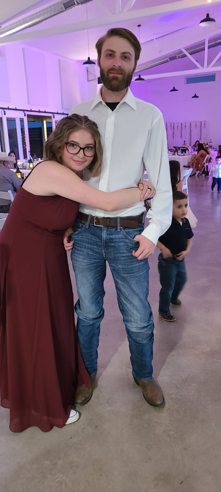

I am a software developer with a passion for creating and designing new applications. I have a background in computer science and have been working in the software industry for over 5 years. I have experience in multiple languages and frameworks, including Java, C#, JavaScript, and React. I am also a graduate of Texas A&M University with a degree in Computer Science, Technology Management, & Business. I have also had a passion for game server design and have worked to create a number of different mods, frameworks, and plugins for games such as CSGO, Gary's Mod, and Minecraft.


